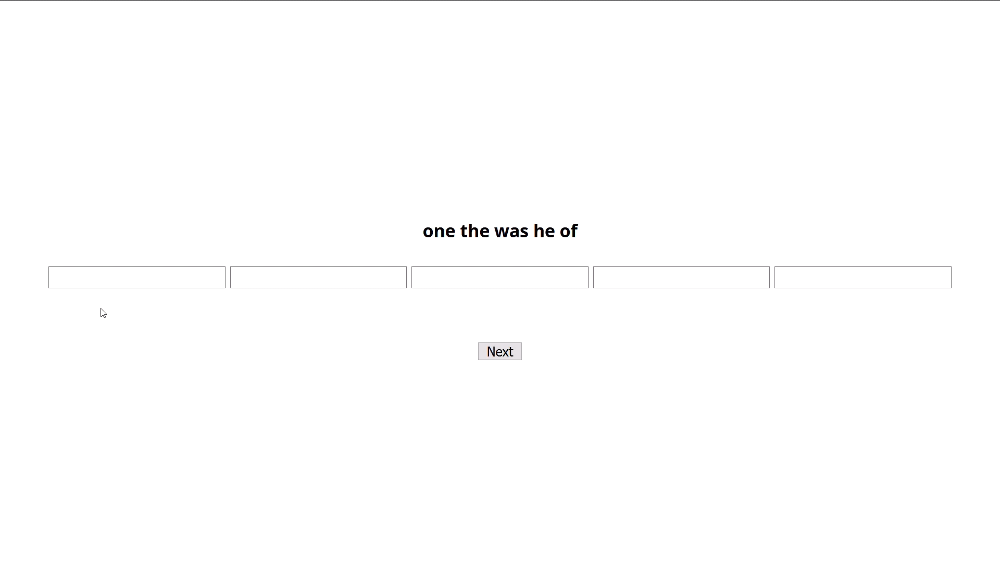

<!DOCTYPE html>
<html>
	<head>
		<title>My experiment</title>
		<script src="jspsych-6.1.0/jspsych.js"></script>
		<script src="jspsych-6.1.0/plugins/jspsych-survey-text.js"></script>
		<script src="jspsych-6.1.0/plugins/jspsych-html-keyboard-response.js"></script>
		<script src="jspsych-6.1.0/plugins/jspsych-cloze.js"></script>
		<script src="jspsych-6.1.0/plugins/jspsych-cloze-blank.js"></script>
		<script src="jspsych-6.1.0/plugins/jspsych-animation.js"></script>
		<script src="https://proliferate.alps.science/static/js/proliferate.js" type="text/javascript"></script>
		<script src="https://ajax.googleapis.com/ajax/libs/jquery/3.5.1/jquery.min.js"></script>
		<link href="jspsych-6.1.0/css/jspsych.css" rel="stylesheet" type="text/css"></link>
		<link href="jspsych-6.1.0/css/animation.css" rel="stylesheet" type="text/css"></link>
	</head>
	<body>
	</body>
	<script>
		
		// The timeline array contains the set of trials we want to run in the experiment
		var timeline = [];	

		var legal = {
			type: 'html-keyboard-response',
			stimulus: '<p>University of California, Irvine Language Processing Group</p>'+
    		'<p id="legal">By answering the following questions, you are participating in a study being performed by cognitive scientists in the University of California, Irvine Department of Language Science. If you have questions about this research, please contact Richard Futrell at rfutrell@uci.edu or Ryan Lee, at leerk3@uci.edu. You must be at least 18 years old to participate. Your participation in this research is voluntary. You may decline to answer any or all of the following questions. You may decline further participation, at any time, without adverse consequences. Your anonymity is assured; the researchers who have requested your participation will not receive any personal information about you.</p>' +
    		'<p>Press spacebar to continue.</p>'
		};
		timeline.push(legal)

		// Define welcome message trial
		var welcome = {
			type: 'html-keyboard-response',
			stimulus: 'Welcome to the experiment. Press spacebar to begin.'
		};
		timeline.push(welcome);


		// Define instructions trial
		var instructions = {
		  type: "html-keyboard-response",
		  stimulus: 
		  	  "<p>A five-word sequence taken from a sentence will be given to you in random order.</p>"+
		  	  "<p>Your task is to rearrange the words to match the original order from which they came.</p>" +
		  	  "<p>However, you will not be given the original sentence.</p>"+
		      "<p>For example:</p>" +
		      // '</img>'+
		      "<video width='852' height='480' controls><source src='first_example_3.mp4' type='video/mp4'></video>"+
		      "<p>Press spacebar to continue with the instructions.</p>",
	      // post_trial_gap: 2000
		};
		timeline.push(instructions);

		// Define notes trial
		var notes = {
		  type: "html-keyboard-response",
		  stimulus: "<p>Note two things.</p>" +
		      "<p>1. The five words may have been taken from any point within a sentence.</p>" +
		      "<video width='852' height='480' controls><source src='note1_example_(quicker).mp4' type='video/mp4'></video>"+
		      "<p>2. If you encounter multiple possibilities like this, just pick one order.</p>" +
		      "<video width='852' height='480' controls><source src='note2_example_final.mp4' type='video/mp4'></video>"+
		      "<p>You will be given the option to re-randomize the words and clear your input.</p>"+
		      "<p>Press spacebar to continue.</p>",
	      // post_trial_gap: 1000
		};
		timeline.push(notes);

		// Define notes trial
		var bonus = {
		  type: "html-keyboard-response",
		  stimulus: "<p>If you successfully match the original order for all trials, you will receive a bonus.</p>" +
		      "<p>Good luck!</p>" +
		      "<p>Press spacebar to continue.</p>",
	      // post_trial_gap: 1000
		};
		timeline.push(bonus);

		var sentence_dict = {'sometimes,more,and,sometimes,less': "And, since then, sometimes more and sometimes less, I've been the sport of that intolerable torture!", 'stroking,something,and,after,a': 'It lays this in the clump of harebells and kneels down as though stroking something, and after a time fades away.', 'whose,troops,bore,the,brunt': 'General Stanley, who commanded two divisions of the Union troops, and whose troops bore the brunt of the battle, was wounded in the fight, but maintained his position.', 'warn,me,frequently,to,steer': 'I had remarked on one side of the road, at intervals of six or seven yards, a line of upright stones, continued through the whole length of the barren: these were erected and daubed with lime on purpose to serve as guides in the dark, and also when a fall, like the present, confounded the deep swamps on either hand with the firmer path: but, excepting a dirty dot pointing up here and there, all traces of their existence had vanished: and my companion found it necessary to warn me frequently to steer to the right or left, when I imagined I was following, correctly, the windings of the road.', 'strong,fort,on,the,plain': 'There is a low, strong fort on the plain in front of the town, known as the Castle of Perote.', 'attack,us,or,get,himself': 'Should he come out and attack us, or get himself where he can be attacked, move in with your entire force in your own way, and with the full reliance that the army will engage or follow, as circumstances will dictate.', 'real,pleasure,his,sight,afforded': 'I will not dissemble what real pleasure his sight afforded me, nor how strongly I felt the contrast between his person and manners and those of Reginald, to the infinite disadvantage of the latter.', 'become,enthusiastic,about,things,and': 'Girls of that age, though, do become enthusiastic about things and feel they must get their way whenever they can.', 'lifted,their,eyes,together,to': 'They lifted their eyes together, to encounter Mr. Heathcliff: perhaps you have never remarked that their eyes are precisely similar, and they are those of Catherine Earnshaw.', 'immediate,and,eternal,separation,from': 'Since we parted yesterday, I have received from indisputable authority such a history of you as must bring the most mortifying conviction of the imposition I have been under, and the absolute necessity of an immediate and eternal separation from you.', 'crossed,our,path,gurgling,from': 'CHAPTER XXIII   The rainy night had ushered in a misty morning--half frost, half drizzle--and temporary brooks crossed our path--gurgling from the uplands.', 'his,sister,quaking,with,tears': "Her father, of course, was startled out of his chair and the two parents looked on astonished and helpless; then they, too, became agitated; Gregor's father, standing to the right of his mother, accused her of not leaving the cleaning of Gregor's room to his sister; from her left, Gregor's sister screamed at her that she was never to clean Gregor's room again; while his mother tried to draw his father, who was beside himself with anger, into the bedroom; his sister, quaking with tears, thumped on the table with her small fists; and Gregor hissed in anger that no-one had even thought of closing the door to save him the sight of this and all its noise.", 'establish,friendly,relations,with,them': "' If we can establish friendly relations with them, though, the  weather may be ours, if that be desirable!", 'not,bind,herself,in,any': 'Your father and I have agreed that she shall not bind herself in any way, nor be married, before twenty.', 'difficulties,were,necessary,to,increase': 'And if difficulties were necessary to increase the splendor of the effort, what could be harder for a restless, ambitious girl than to give up her own hopes, plans, and desires, and cheerfully live for others?', 'refuge,in,which,several,strange': 'The rooms of his house became a sort of harbour of refuge in which several strange battered hulks found their last moorings.', 'ascends,to,the,divine,perfection': 'By the right choice and true application of thought, man ascends to the Divine Perfection; by the abuse and wrong application of thought, he descends below the level of the beast.', 'that,their,exertions,will,be': 'It ended with the statement:        The matter is now in the hands of the police; but it can     hardly be hoped that their exertions will be attended by any     better results than in the past.', 'classification,of,an,immense,domain': 'One ought to avow with the utmost fairness WHAT is still necessary here for a long time, WHAT is alone proper for the present: namely, the collection of material, the comprehensive survey and classification of an immense domain of delicate sentiments of worth, and distinctions of worth, which live, grow, propagate, and perish--and perhaps attempts to give a clear idea of the recurring and more common forms of these living crystallizations--as preparation for a THEORY OF TYPES of morality.', 'she,should,drive,away,with': "The carriages were promised, Meg and Mother were all ready to do the honors, Beth was able to help Hannah behind the scenes, Jo had engaged to be as lively and amiable as an absent mind, and aching head, and a very decided disapproval of everybody and everything would allow, and as she wearily dressed, Amy cheered herself with anticipations of the happy moment when, lunch safely over, she should drive away with her friends for an afternoon of artistic delights, for the 'cherry bounce' and the broken bridge were her strong points.", 'authorized,by,the,state,legislature': 'Having but little to do after the muster of the last of the regiments authorized by the State legislature, I asked and obtained of the governor leave of absence for a week to visit my parents in Covington, Kentucky, immediately opposite Cincinnati.', 'this,room,was,often,kept': 'The gentlemen who rented the room would sometimes take their evening meal at home in the living room that was used by everyone, and so the door to this room was often kept closed in the evening.', 'gave,the,chair,a,violent': "'  Cathy, beside herself, gave the chair a violent push, and caused him to fall against one arm.", 'have,let,him,crawl,around': 'That would have let him crawl around unimpeded in any direction, but it would also have let him quickly forget his past when he had still been human.', 'to,discourage,him,and,dampen': "The men of both Lee's and Johnston's armies were, like their brethren of the North, as brave as men can be; but no man is so brave that he may not meet such defeats and disasters as to discourage him and dampen his ardor for any cause, no matter how just he deems it.", 'ready,to,overflow,the,new': 'It may be taken as a striking example of the purpose and design which run through the affairs of men, that at the very moment when the old world was ready to overflow the new world was empty to receive it.', 'mentioned,as,having,committed,in': 'He commanded a corps longer than any other one, and his name was never mentioned as having committed in battle a blunder for which he was responsible.', 'contents,of,our,own,minds': 'But for our acquaintance with the contents of our own minds, we should be unable to imagine the minds of others, and therefore we could never arrive at the knowledge that they have minds.', 'telling,the,same,pitiful,story': 'Isekansu shows his stump of a forearm, telling the     same pitiful story.', 'indicates,a,high,degree,of': "Seriously to suggest that a  visit to a cinema show and the use of an apt illustration implies  'a very considerable knowledge of photography' is on a par with the  supposition that to be employed as an errand girl and help in a shop  indicates a high degree of skill in that profession!", 'to,enter,when,he,received': '\' With these thrilling words he rushed away, and flinging open the door of the mauve salon, was about to enter, when he received..."  "A stunning blow from the big Greek lexicon, which an old fellow in a black gown fired at him," said Ned.', 'they,address,themselves,to,all': 'All the systems of morals which address themselves with a view to their "happiness," as it is called--what else are they but suggestions for behaviour adapted to the degree of DANGER from themselves in which the individuals live; recipes for their passions, their good and bad propensities, insofar as such have the Will to Power and would like to play the master; small and great expediencies and elaborations, permeated with the musty odour of old family medicines and old-wife wisdom; all of them grotesque and absurd in their form--because they address themselves to "all," because they generalize where generalization is not authorized; all of them speaking unconditionally, and taking themselves unconditionally; all of them flavoured not merely with one grain of salt, but rather endurable only, and sometimes even seductive, when they are over-spiced and begin to smell dangerously, especially of "the other world.', 'telling,the,story,at,home': '" thought Jo, as she was marched away, while her eyes danced with fun as she imagined herself telling the story at home.', 'months,with,all,the,witnesses': "As a prosecution     would have entailed his going to Lusambo, a fifteen days' journey,     with every prospect of being kept there some four to six months with     all the witnesses while awaiting the hearing of his case, he chose the     latter method.", 'are,just,as,obvious,as': 'When some of them have been granted, others can be proved, though these others, so long as they are simple, are just as obvious as the principles taken for granted.', 'who,served,under,him,and': 'He gained the confidence of all who served under him, and almost their love.', 'the,lower,corner,of,the': '"I merely wish to say, that as a slight token of my gratitude for the honor done me, and as a means of promoting friendly relations between adjoining nations, I have set up a post office in the hedge in the lower corner of the garden, a fine, spacious building with padlocks on the doors and every convenience for the mails, also the females, if I may be allowed the expression.', 'was,off,with,his,dogs': "'On my second visit Linton seemed in lively spirits; and Zillah (that is their housekeeper) made us a clean room and a good fire, and told us that, as Joseph was out at a prayer-meeting and Hareton Earnshaw was off with his dogs--robbing our woods of pheasants, as I heard afterwards--we might do what we liked.", 'the,right,to,include,within': 'In all willing it is absolutely a question of commanding and obeying, on the basis, as already said, of a social structure composed of many "souls", on which account a philosopher should claim the right to include willing-as-such within the sphere of morals--regarded as the doctrine of the relations of supremacy under which the phenomenon of "life" manifests itself.', 'stopped,and,gathered,in,a': 'The men stopped and gathered in a yard which faced a high building.', 'to,venture,to,deny,the': "It is as though some well-meaning person, who     had heard that a certain fashionable firm was making a fortune by     sweated labour, were to venture to deny the facts because a cursory     visit to the West End establishment showed that the salesmen behind     the counter were well-dressed and well-nourished, ignoring altogether     the festering misery of the sweaters' dens in which every article sold     over that counter was made up.", 'remain,in,ignorance,of,his': "'     CHAPTER XX   To obviate the danger of this threat being fulfilled, Mr. Linton commissioned me to take the boy home early, on Catherine's pony; and, said he--'As we shall now have no influence over his destiny, good or bad, you must say nothing of where he is gone to my daughter: she cannot associate with him hereafter, and it is better for her to remain in ignorance of his proximity; lest she should be restless, and anxious to visit the Heights.", 'the,protection,of,the,loyal': "Dispatches were constantly coming, urging me to do something for Burnside's relief; calling attention to the importance of holding East Tennessee; saying the President was much concerned for the protection of the loyal people in that section, etc.", 'she,had,given,a,last': 'Jo uttered a groan and fell back in her chair, remembering that she had given a last hasty powdering to the berries out of one of the two boxes on the kitchen table, and had neglected to put the milk in the refrigerator.', 'advantage,on,the,morning,of': 'We gained an advantage on the morning of the 6th, which, if it had been followed up, must have proven very decisive.', 'her,simply,because,she,was': 'They disliked her, but had been taught to be kind to her, simply because she was old and poor and had few friends.', 'and,hastened,to,make,everything': 'When he grew to manhood, Quelala, as he was called, was said to be the best and wisest man in all the land, while his manly beauty was so great that Gayelette loved him dearly, and hastened to make everything ready for the wedding.', 'the,rich,scent,of,the': 'I smelt the rich scent of the heating spices; and admired the shining kitchen utensils, the polished clock, decked in holly, the silver mugs ranged on a tray ready to be filled with mulled ale for supper; and above all, the speckless purity of my particular care--the scoured and well-swept floor.', 'and,supported,by,a,thick': 'He was quite short and stout and had a big head, which was flat at the top and supported by a thick neck full of wrinkles.', 'busy,with,his,books,and': "The war is over, and Mr. March safely at home, busy with his books and the small parish which found in him a minister by nature as by grace, a quiet, studious man, rich in the wisdom that is better than learning, the charity which calls all mankind 'brother', the piety that blossoms into character, making it august and lovely.", 'on,the,face,of,the': 'Every Linton on the face of the earth might melt into nothing before I could consent to forsake Heathcliff.', 'it,was,the,name,of': "On coming back a few days afterwards (for I did not consider my banishment perpetual), I found they had christened him 'Heathcliff': it was the name of a son who died in childhood, and it has served him ever since, both for Christian and surname.", 'but,it,was,a,little': '"  I laughed all the way downstairs, but it was a little pathetic, also to think of the poor man having to mend his own clothes.', 'that,there,was,a,good': 'CHAPTER VII  SOME SUBSEQUENT CASES   From the foregoing chapter it will be clear that there was a good deal of evidence which cannot easily be brushed aside as to the existence of these little creatures before the discovery of the photographs.', 'at,the,sight,of,him': "I'm used to rough work; but I fairly turned sick at the sight of him.", 'it,would,not,have,been': 'The land was so low and wet that it would not have been practicable to march an army across but for a levee.', 'but,it,was,a,very': '"I\'ll try, but it was a very ungentlemanly thing to do, I didn\'t think you could be so sly and malicious, Laurie," replied Meg, trying to hide her maidenly confusion under a gravely reproachful air.', 'he,did,not,want,to': 'So now Gregor was shut out from his mother, who, because of him, might be near to death; he could not open the door if he did not want to chase his sister away, and she had to stay with his mother; there was nothing for him to do but wait; and, oppressed with anxiety and self-reproach, he began to crawl about, he crawled over everything, walls, furniture, ceiling, and finally in his confusion as the whole room began to spin around him he fell down into the middle of the dinner table.', 'is,not,one,of,the': "If Socrates is not one of the men on whom our induction is based, we shall still do better to argue straight from our A, B, C, to Socrates, than to go round by the general proposition, 'all men are mortal'.", 'he,did,not,know,it': '"He told us nothing of all this last night," said she, laughing, "or even this morning at breakfast; but perhaps he did not know it himself.'}
		var likely_1 = [['sometimes', 'more', 'and', 'sometimes', 'less'],['stroking', 'something', 'and', 'after', 'a'],['whose', 'troops', 'bore', 'the', 'brunt'],['warn', 'me', 'frequently', 'to', 'steer'],['strong', 'fort', 'on', 'the', 'plain'],['attack', 'us', 'or', 'get', 'himself'],['real', 'pleasure', 'his', 'sight', 'afforded'],['become', 'enthusiastic', 'about', 'things', 'and'],['lifted', 'their', 'eyes', 'together', 'to'],['immediate', 'and', 'eternal', 'separation', 'from']]
		var likely_2 = [['crossed', 'our', 'path', 'gurgling', 'from'],['his', 'sister', 'quaking', 'with', 'tears'],['establish', 'friendly', 'relations', 'with', 'them'],['not', 'bind', 'herself', 'in', 'any'],['difficulties', 'were', 'necessary', 'to', 'increase'],['refuge', 'in', 'which', 'several', 'strange'],['ascends', 'to', 'the', 'divine', 'perfection'],['that', 'their', 'exertions', 'will', 'be'],['classification', 'of', 'an', 'immense', 'domain'],['she', 'should', 'drive', 'away', 'with']]
		var likely_3 = [['authorized', 'by', 'the', 'state', 'legislature'],['this', 'room', 'was', 'often', 'kept'],['gave', 'the', 'chair', 'a', 'violent'],['have', 'let', 'him', 'crawl', 'around'],['to', 'discourage', 'him', 'and', 'dampen'],['ready', 'to', 'overflow', 'the', 'new'],['mentioned', 'as', 'having', 'committed', 'in'],['contents', 'of', 'our', 'own', 'minds'],['telling', 'the', 'same', 'pitiful', 'story'],['indicates', 'a', 'high', 'degree', 'of']]
		var likely_4 = [['to', 'enter', 'when', 'he', 'received'],['they', 'address', 'themselves', 'to', 'all'],['telling', 'the', 'story', 'at', 'home'],['months', 'with', 'all', 'the', 'witnesses'],['are', 'just', 'as', 'obvious', 'as'],['who', 'served', 'under', 'him', 'and'],['the', 'lower', 'corner', 'of', 'the'],['was', 'off', 'with', 'his', 'dogs'],['the', 'right', 'to', 'include', 'within'],['stopped', 'and', 'gathered', 'in', 'a']]
		var likely_5 = [['to', 'venture', 'to', 'deny', 'the'],['remain', 'in', 'ignorance', 'of', 'his'],['the', 'protection', 'of', 'the', 'loyal'],['she', 'had', 'given', 'a', 'last'],['advantage', 'on', 'the', 'morning', 'of'],['her', 'simply', 'because', 'she', 'was'],['and', 'hastened', 'to', 'make', 'everything'],['the', 'rich', 'scent', 'of', 'the'],['and', 'supported', 'by', 'a', 'thick'],['busy', 'with', 'his', 'books', 'and']]
		var likely_6 = [['on', 'the', 'face', 'of', 'the'],['it', 'was', 'the', 'name', 'of'],['but', 'it', 'was', 'a', 'little'],['that', 'there', 'was', 'a', 'good'],['at', 'the', 'sight', 'of', 'him'],['it', 'would', 'not', 'have', 'been'],['but', 'it', 'was', 'a', 'very'],['he', 'did', 'not', 'want', 'to'],['is', 'not', 'one', 'of', 'the'],['he', 'did', 'not', 'know', 'it']]
		
		function shuffle(array) {
		  var currentIndex = array.length, temporaryValue, randomIndex;

		  // While there remain elements to shuffle...
		  while (0 !== currentIndex) {

		    // Pick a remaining element...
		    randomIndex = Math.floor(Math.random() * currentIndex);
		    currentIndex -= 1;

		    // And swap it with the current element.
		    temporaryValue = array[currentIndex];
		    array[currentIndex] = array[randomIndex];
		    array[randomIndex] = temporaryValue;
		  }

		  return array;
		}

		function get_trial_text(ordered, shuffled) {
			var random_words_string = shuffled.join(' </a><a>');
			var random_words_string = '<a>' + random_words_string + ' </a>'
			var output_1 = '<p id=\'word-choices\'>'+random_words_string+"</p>"
			var output_2 = "<p>"
			ordered.forEach(function(each){
				output_2 += "%" + each + "%"
			})
			output_2 += '</p><button class=\'randomize\'>Re-randomize word order</button><button class=\'clear\'>Clear</button>'
			return output_1+output_2
		}		

		function fill_array(fill_from) {
			final_array = []
			fill_from.forEach(function(each){
				ordered = each.slice()
				shuffled = shuffle(each)
				final_array.push({'text': get_trial_text(ordered, shuffled)})
			})
			return final_array
		}

		likely_1 = fill_array(likely_1)
		likely_2 = fill_array(likely_2)
		likely_3 = fill_array(likely_3)
		likely_4 = fill_array(likely_4)
		likely_5 = fill_array(likely_5)
		likely_6 = fill_array(likely_6)
		shuffle(likely_1)
		shuffle(likely_2)
		shuffle(likely_3)
		shuffle(likely_4)
		shuffle(likely_5)
		shuffle(likely_6)
		likely_1 = likely_1.slice(0,5)
		likely_2 = likely_2.slice(0,5)
		likely_3 = likely_3.slice(0,5)
		likely_4 = likely_4.slice(0,5)
		likely_5 = likely_5.slice(0,5)
		likely_6 = likely_6.slice(0,5)

		var test_stimuli = []
		var first_set = likely_6.slice(0,3)
		var pre_remaining_set = likely_6.slice(3).concat(likely_1).concat(likely_2).concat(likely_3).concat(likely_4).concat(likely_5)
		// var pre_remaining_set = most_likely.concat(mid_likely).concat(least_likely)
		shuffle(pre_remaining_set)
		var remaining_set = pre_remaining_set
		test_stimuli = test_stimuli.concat(first_set)
		test_stimuli = test_stimuli.concat(remaining_set)

		var fixation = {
		  type: 'html-keyboard-response',
		  stimulus: function(){
			var images = document.getElementsByTagName('img');
			var l = images.length;
			for (var i = 0; i < l; i++) {
			    images[0].parentNode.removeChild(images[0]);
			}
		    var last_trial_correct = jsPsych.data.getLastTrialData();
		    var key = jsPsych.data.getLastTrialData().values()[0].solution.toString()
		    var response = jsPsych.data.getLastTrialData().values()[0].response.toString()
		  	if(last_trial_correct.values()[0].correct){
		  		return '<h2>Correct!</h2><h4>Your response was:</h4><p>'+response+'</p><h4>Here is the original sentence:</h4><p>'+sentence_dict[key]+'</p><p style="font-size:11px;">(This sentence was scraped from a text from Project Gutenberg.)</p><p style="font-size:11px;">Press space to continue.</p>'
		  	} else{
		  		return '<h2>Wrong.</h2><h4>Your response was:</h4><p>'+response+'</p><h4>Here is the correct answer and the original sentence:</h4><p>'+key+'</p><p>'+sentence_dict[key]+'</p><p style="font-size:11px;">(This sentence was scraped from a text from Project Gutenberg.)</p><p style="font-size:11px;">Press space to continue.</p>'
		  		// return '<p>Wrong.</p><p>Here was the original sentence:</p><p></p><p>Press any key to continue.</p>'

		  	}
		  },
		  choices: [' '],
	      trial_duration: function(){
		    var last_trial_correct = jsPsych.data.getLastTrialData();
		  	if(last_trial_correct.values()[0].correct){
		  		return 60000
		  	} else{
		  		return 60000
		  	}
		  },
	      data: {test_part: 'fixation'}
		};
		var trial = {
		    type: 'cloze',
		    text: jsPsych.timelineVariable('text'),
		    check_answers: true,
		    button_text: 'Next',
		    on_load: function(trial){
			    var isTesting = document.getElementsByClassName('cloze');
			    var inputs = isTesting[0].childNodes[1].childNodes
			    var words = isTesting[0].childNodes[0].childNodes
			    var words_copy = words
			    var words_array = []
			    words.forEach(word => words_array.push(word.text.trim()))
			    isTesting[0].childNodes[1].childNodes.forEach(inputBox => inputBox.addEventListener('keyup',isMatch))
			    isTesting[0].childNodes[2].addEventListener('click', randomize)
			    isTesting[0].childNodes[3].addEventListener('click', clear)

			    function isMatch(e) {
			    	text_input = e.target.value
			    	var line_through = 0
					//console.log("text_input: "+text_input)
			    	if (words_array.includes(text_input)) {
			    		try{
			    			//console.log("words_array: "+words_array.toString());
			    			;
			    			var occurence = 0;
			    			words_array.forEach(word => (text_input == word ? occurence++ : ''));
			    			(occurence > 1 ? (words[words_array.indexOf(text_input)].style.textDecoration=="line-through" ? words[words_array.indexOf(text_input, words_array.indexOf(text_input)+1)].style.textDecoration="line-through" : words[words_array.indexOf(text_input)].style.textDecoration="line-through") : words[words_array.indexOf(text_input)].style.textDecoration="line-through");
			    			
			    		} catch(e){
			    			//console.log(e)
			    		}
			    	} else {
			    		input_match = []
			    		input_nonmatch = words_array.slice()
			    		inputs.forEach(function(input) {
			    			(words_array.includes(input.value.trim()) ? input_match.push(input.value.trim()) : '');
			    			input_match.forEach(match => input_nonmatch.splice(input_nonmatch.indexOf(match)))
			    			input_match.forEach(match => words[words_array.indexOf(match)].style.textDecoration="line-through")
			    			input_nonmatch.forEach(nonmatch => words[words_array.indexOf(nonmatch)].style.textDecoration="none")
			    		});
			    	}
			    }

			    function randomize(e) {
					for (i = isTesting[0].childNodes[0].childNodes.length; i >= 0; i--) {
					    isTesting[0].childNodes[0].appendChild(isTesting[0].childNodes[0].children[Math.random() * i | 0]);
					}
				    words = isTesting[0].childNodes[0].childNodes
				    words_copy = words
				    words_array = []
				    words.forEach(word => words_array.push(word.text.substring(0,word.text.length-1)))
			    }

			    function clear(e) {
			    	isTesting[0].childNodes[1].childNodes.forEach(inputBox => inputBox.value = "")
				    input_nonmatch = words_array.slice()
				    input_nonmatch.forEach(nonmatch => words[words_array.indexOf(nonmatch)].style.textDecoration="none")
			    }
		    }

		};
		var test_procedure = {
		  timeline: [ trial, fixation],
		  timeline_variables: test_stimuli,
		  randomize_order: false,
		  repetitions: 1
		};
		timeline.push(test_procedure);

		var debrief_block = {
		  type: "html-keyboard-response",
		  stimulus: function() {

		    var trials = jsPsych.data.get().filter({test_part: 'test'});
		    var correct_trials = trials.filter({correct: true});
		    var accuracy = Math.round(correct_trials.count() / trials.count() * 100);
		    var rt = Math.round(correct_trials.select('time_elapsed').mean())/1000;

		    return "<p>You responded correctly on "+accuracy+"% of the trials.</p>"+
		    "<p>Despite this, we've decided to award you the bonus anyway. Congratulations!</p>"+
		    "</img>"+
		    "<p>Press any key to continue. Thank you!</p>";

		  }
		};
		timeline.push(debrief_block);

		var survey = {
 			type: 'cloze-blank',
		    text: '<p>Please be sure to click submit to end the experiment.</p>'+
		  '<p class="info">Answering these questions is optional, but will help us understand your answers.</p>'+  
	      '<p>Did you read the instructions and do you think you did the experiment correctly? '+
	      	  '<select id="understanding">'+
	          '<label><option value=""/></label>'+
	          '<label><option value="No"/>No</label>'+
	          '<label><option value="Yes"/>Yes</label>'+
	          '<label><option value="Confused"/>I was confused</label>'+
	          '</select>'+
	      '</p>'+
	      '<p>Gender: '+
	        '<select id="gender">'+
	          '<label><option value=""/></label>'+
	          '<label><option value="Male"/>Male</label>'+
	          '<label><option value="Female"/>Female</label>'+
	          '<label><option value="Other"/>Other</label>'+
	        '</select>'+
	      '</p>'+
	      '<p>Age: <input type="text" id="age"/></p>'+
	      '<p>Level Of Education: '+
	        '<select id="education">'+
	          '<label><option value="-1"/></label>'+
	          '<label><option value="0"/>Some High School</label>'+
	          '<label><option value="1"/>Graduated High School</label>'+
	          '<label><option value="2"/>Some College</label>'+
	          '<label><option value="3"/>Graduated College</label>'+
	          '<label><option value="4"/>Hold a higher degree</label>'+
	        '</select>'+
	      '</p>'+
	      '<p>Native Language: <input type="text" id="language"/></p>'+
	      '<label>(the language(s) spoken at home when you were a child)</label>'+
	     ' <p>Did you enjoy the experiment?</p>'+
	      '<select id="enjoyment">'+
	       ' <label><option value="-1"></option></label>'+
	        '<label><option value="0">Worse than the average experiment</option></label>'+
	        '<label><option value="1" >An average experiment</option></label>'+
	        '<label><option value="2">Better than average experiment</option></label>'+
	      '</select>'+
	      '<p>We would be interested in any comments you have about this experiment. Please type them here:</p>'+
	      '<textarea id="comments" rows="3" cols="50"></textarea>'+
	      '<br/>'
	      ,
		    check_answers: false,
		    button_text: 'Submit',
		};
		timeline.push(survey);


		// let ppn = jsPsych.data.urlVariables()['ppn']
		let ppn = jsPsych.data.urlVariables()
		// call the saveData function after the experiment is over
		jsPsych.init({
	       timeline: timeline,
		   // code to define the experiment structure would go here...
            on_finish: function (data) {  
            	console.log(data.values())  
            	proliferate.submit({"trials": data.values(), "participant_id": ppn['participant_id'], "experiment_id": ppn['experiment_id']});
                document.body.innerHTML = '<p> Please wait. You will be redirected back to Prolific in a few moments.</p>'
                // window.location.assign("")
                setTimeout(function () { location.href = "https://app.prolific.co/submissions/complete?cc=4B1CD1C5" }, 3000)
            }
		});

	</script>
</html>
